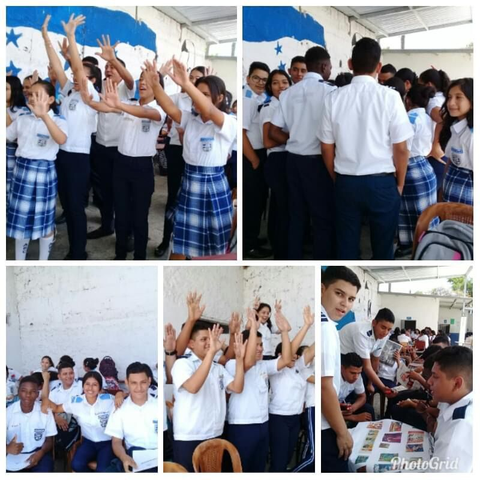

Objetivos

- Incrementar el acceso de niños y niñas en edad obligatoria para la educación básica y media.
- Incrementar el acceso de niños y niñas de al grado correspondiente según la edad oportuna en las diferentes jornadas.
- Asegurar la permanencia de niños, niñas y jóvenes en el centro educativo en los niveles de básica y media.
- Desarrollar estrategias coordinadas para disminuir los índices de reprobación y deserción en nuestros educandos.
- Disminuir índices de migración interna.
- Elevar nuestros indicadores educativos.
- Capacitar y actualizar a nuestros docentes.
- Expandir la oferta académica en las Instituciones Gubernamentales vecinas.
- Evaluar trimestralmente el plan remedial con el personal docente.
- Organizar la comunidad educativa a través de las IPCE.
- Fortalecer la transparencia y rendición de cuentas.
- Consolidar la labor educativa bajo el esquema de las Redes Educativas.